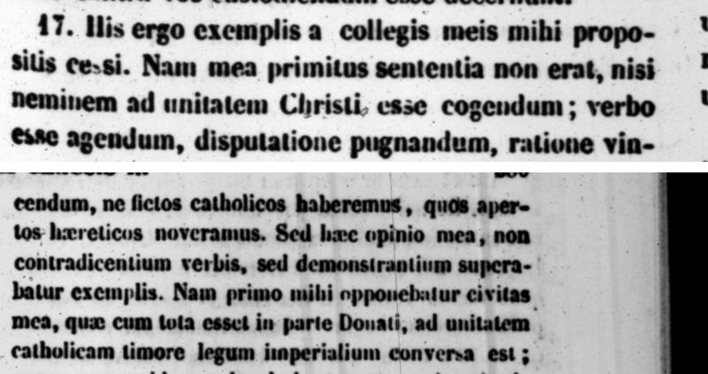
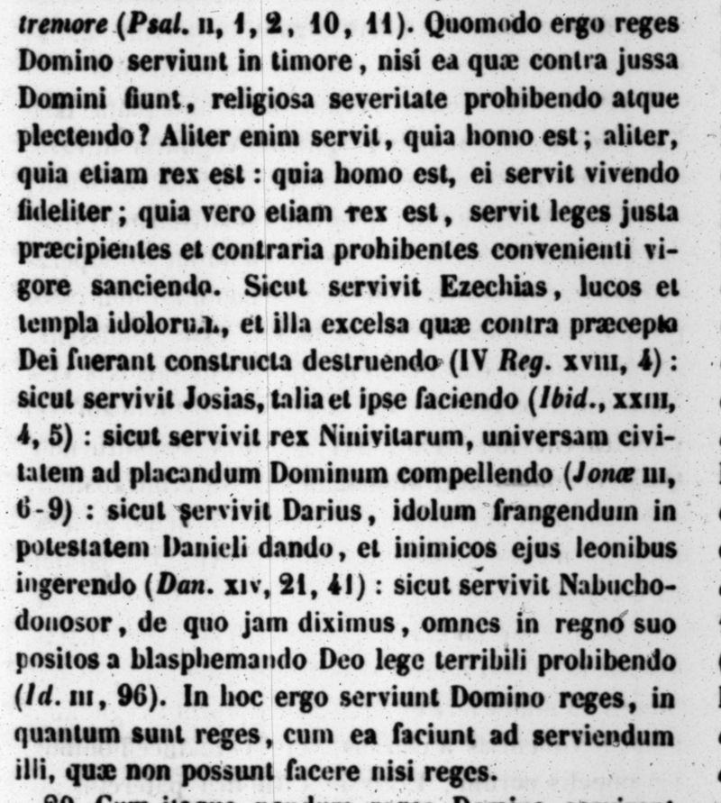

Letter 93 § 17: “Nam mea primitus sententia …” (PL 33, cols. 329–330)
Latin: Migne PL 33, cols. 329–330, scan n164 (the end of one column, the top of the next). Highlighted: the change of mind Lecky describes.

17. To these examples, then, put before me by my colleagues, I gave way. For my opinion at first was that no one should be coerced into the unity of Christ; that we must act by word, fight by argument, conquer by reason, lest we should have feigned Catholics whom we had known as open heretics. But this opinion of mine was overcome, not by the words of those who contradicted it, but by the examples of those who demonstrated. For first my own city was set against me, which, though it was wholly on the side of Donatus, was converted to Catholic unity by fear of the imperial laws; …
Original Latin
17. His ergo exemplis a collegis meis mihi propositis cessi. Nam mea primitus sententia non erat, nisi neminem ad unitatem Christi esse cogendum; verbo esse agendum, disputatione pugnandum, ratione vincendum, ne fictos catholicos haberemus, quos apertos hæreticos noveramus. Sed hæc opinio mea, non contradicentium verbis, sed demonstrantium superabatur exemplis. Nam primo mihi opponebatur civitas mea, quæ cum tota esset in parte Donati, ad unitatem catholicam timore legum imperialium conversa est; …
Lecky (vol. II, ch. IV, text at note 27): “For a time he shrank from, and even condemned, persecution; but he soon perceived in it the necessary consequence of his principles. He recanted his condemnation.” Augustine’s own account is less about principles than about results: what changed his mind was the sight of Donatist towns turned Catholic by the laws. The same letter (§ 5, OCR only) already applies the parable’s “cogite intrare”, “compel them to come in” (Luke 14:23), to the Donatists.
Letter 185 § 19: kings serve God by punishing (PL 33, col. 801)
Latin: Migne PL 33, col. 801, scan n400. Highlighted: the precedents Lecky lists.

… How then do kings serve the Lord in fear, if not by forbidding and punishing with religious severity what is done against the Lord’s commands? For a king serves him in one way because he is a man, in another because he is also a king: because he is a man, he serves him by living faithfully; because he is also a king, he serves him by enacting, with fitting vigour, laws that command what is just and forbid the contrary. So Hezekiah served him, by destroying the groves and temples of the idols and the high places built against God’s commands (2 Kings 18:4); so Josiah served him, by doing the same (2 Kings 23:4–5); so the king of Nineveh served him, by compelling the whole city to appease the Lord (Jonah 3:6–9); so Darius served him, by giving the idol into Daniel’s power to be broken, and throwing his enemies to the lions (Daniel 14 [Bel and the Dragon]); so Nebuchadnezzar served him, of whom we have already spoken, by forbidding all in his kingdom, with a terrible law, to blaspheme God (Daniel 3:96 [3:29]). In this, then, kings serve the Lord as kings: when they do in his service what only kings can do.
Original Latin
… Quomodo ergo reges Domino serviunt in timore, nisi ea quæ contra jussa Domini fiunt, religiosa severitate prohibendo atque plectendo? Aliter enim servit, quia homo est; aliter, quia etiam rex est: quia homo est, ei servit vivendo fideliter; quia vero etiam rex est, servit leges justa præcipientes et contraria prohibentes convenienti vigore sanciendo. Sicut servivit Ezechias, lucos et templa idolorum, et illa excelsa quæ contra præcepta Dei fuerant constructa destruendo (IV Reg. XVIII, 4): sicut servivit Josias, talia et ipse faciendo (Ibid., XXIII, 4, 5): sicut servivit rex Ninivitarum, universam civitatem ad placandum Dominum compellendo (Jonæ III, 6-9): sicut servivit Darius, idolum frangendum in potestatem Danieli dando, et inimicos ejus leonibus ingerendo (Dan. XIV, 21, 41): sicut servivit Nabuchodonosor, de quo jam diximus, omnes in regno suo positos a blasphemando Deo lege terribili prohibendo (Id. III, 96). In hoc ergo serviunt Domino reges, in quantum sunt reges, cum ea faciunt ad serviendum illi, quæ non possunt facere nisi reges.
Lecky (vol. II, ch. IV, text at note 28): “Did not Hezekiah, and Josiah, and the king of Nineveh, and Nebuchadnezzar after his conversion, destroy by force idolatry within their dominions, and were they not expressly commended for their piety?” His list is Augustine’s, without Darius; Elijah, whom Lecky names in the sentence before, is not in this paragraph.
Further down the rabbit hole
Sources that Lecky cites in the notes next to the ones that cite this page.
- Gibbon, Decline and Fall of the Roman EmpireAn Augustine quotation and a stronger claim about Aliturus
- Milman, The History of ChristianityDid Constantine ban the pagan sacrifices? A dean weighs Eusebius against Constantine
- Codex Theodosianus XVI.8.1 and XVI.10.3Constantine on Jews and converts, and the temples spared for the sake of the games
- Aquinas, Summa theologiae, II-IIHeretics and forgers; the usurper’s subjects
- Baxter, A Holy CommonwealthA Puritan’s syllogism against toleration
- Bayle, Commentaire philosophiqueBayle answers the Mosaic law objection to toleration


Backlinks
Every place in Rationalism in Europe that links to this page (generated automatically when the site is built).